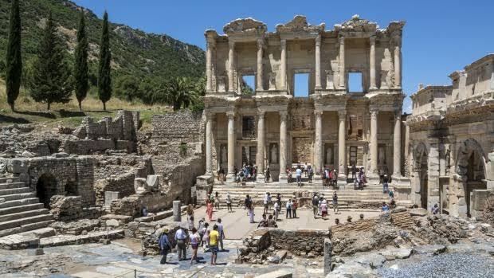
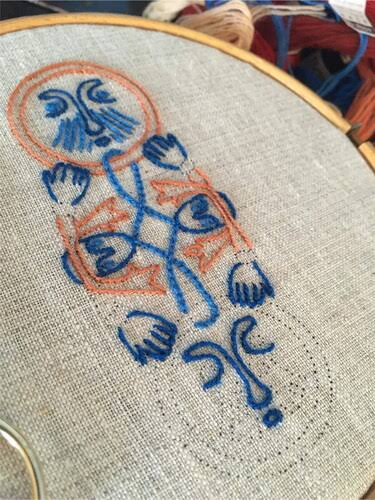
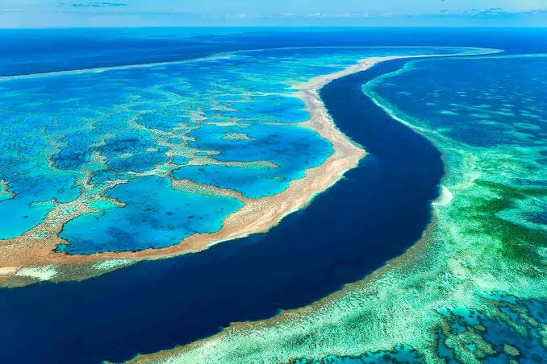
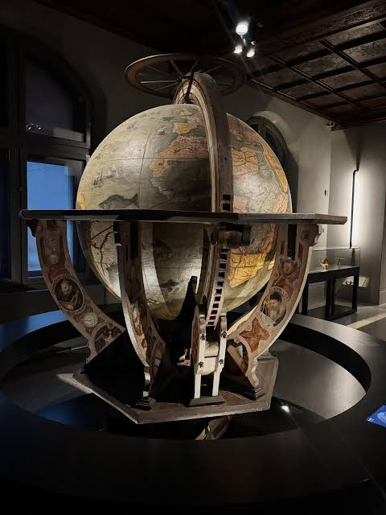

Four galleries of artifacts, sculpture, and craft, arranged the way a curator would walk you through them — one room, one light, one story at a time.
The collection
Four rooms, numbered as they're encountered on the floor plan — not by importance.

Ancient Mediterranean
Pottery, coinage, and votive bronzes recovered from coastal trade routes.
Modern Sculpture
Cast bronze and carved stone works tracing the shift from figure to form.

Textiles & Craft
Handwoven cloth, dye work, and tools passed through generations of makers.

Natural Wonders
Minerals, fossils, and specimens on loan from field expeditions worldwide.

The Cartographer's Sphere
A hand-painted terrestrial globe, its oceans rendered in verdigris copper leaf and its coastlines annotated in a hand no one has yet identified. Restored over eleven months, it remains the collection's most quietly debated piece.
- Origin: Northern workshop, circa 1690
- Materials: Papier-mâché, copper leaf, oak stand
- Acquired: Private donation, 2019
- Accession No.: MM.1690.014
facts
Some interesting facts, that around 60% people in the world don't know about Museums.
- Origins: The word "museum" comes from the Greek "mouseion," meaning a temple dedicated to the Muses.
- Global Count: There are over 100,000 museums currently operating across the globe.
- Oldest: The earliest known museum was created around 530 BCE in modern-day Iraq by a Babylonian princess.
- Largest Art Museum: The Louvre in Paris holds roughly 500,000 objects. Viewing each piece for 30 seconds would take over 100 days.
- Largest Complex: The Smithsonian Institution in Washington, D.C., holds over 154 million artifacts across 19 separate museums and centers.
- Longest Walk: Touring the Vatican Museums requires walking a continuous 7-kilometer (4.3-mile) path.
- Underwater: Mexico's MUSA museum features over 500 submerged sculptures designed to help coral reefs grow.
- Biggest Theft: The 1990 Isabella Stewart Gardner Museum heist in Boston remains the largest art theft in history, totaling $500 million in losses.
- Storage: The vast majority of artifacts owned by museums are kept in private storage and never shown to the public.
- Niche Themes: Dedicated museums exist for highly unusual subjects, including historical toilets and trash.